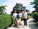
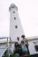
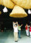

2000年9月17日撮影
大山／桝水原のリフトに乗って小高い展望台へ到着。
いっちょまえに双眼鏡を覗いている（？）由起子です。
2000年9月16日撮影
せっかく島根県までやって来たんだから立ち寄ろう・・・
ということになった松江城
2000年9月15日撮影
石積みの灯台としては日本一の「出雲日御碕灯台（４４ｍ）」
由起子を抱っこしての急な１６０段の階段は、拷問でしたね。
2000年9月15日撮影
出雲大社の神楽殿。大きな大きなしめ縄にはお賽銭がいっぱい
挟まっています。由起子とママもお賽銭を投げ込みました。2000年8月30日21時12分撮影
２週間前に収納扉で挟んでしまった親指の爪。
マジックで落書きしたように真っ黒になってきています。。。2000年8月27日11時44分撮影
市民プールでパパと一緒に、いっぱい・いっぱい遊びました！2000年8月19日撮影
ハイツの敷地内で。最近カメラを向けると右手を何とかして「ピース」
としたい由起子。でもまだ、ちょっとむずかしいね。2000年8月18日撮影
（姪っ子）ネェネェのおうちで大好きなプール。ちょっと鼻水が・・・。2000年8月18日撮影
暑い日は、やっぱり、なんといっても、プールが一番気持ちイイー！2000年8月7日撮影
５月生まれの「宝くん」ちに遊びに行きました。
お手々つないで、仲良し・こよし。。。